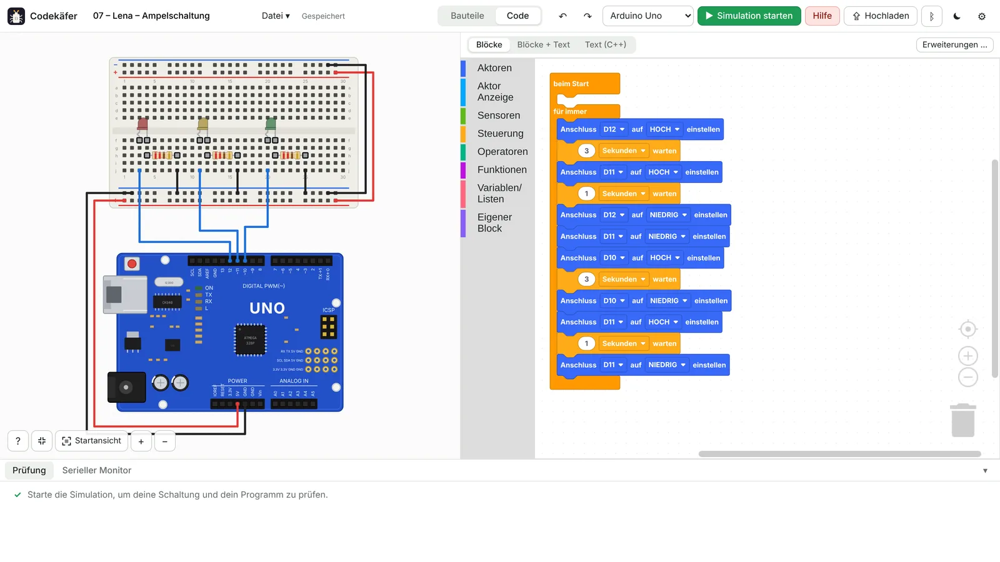
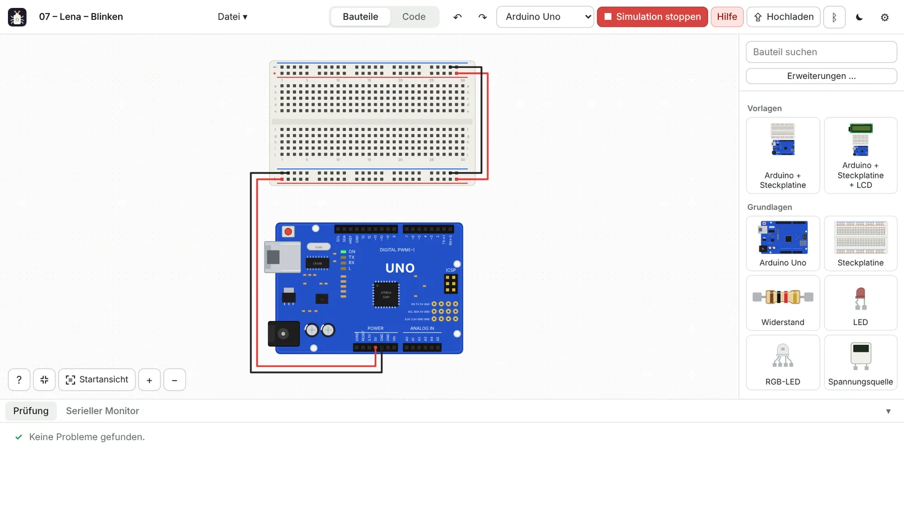
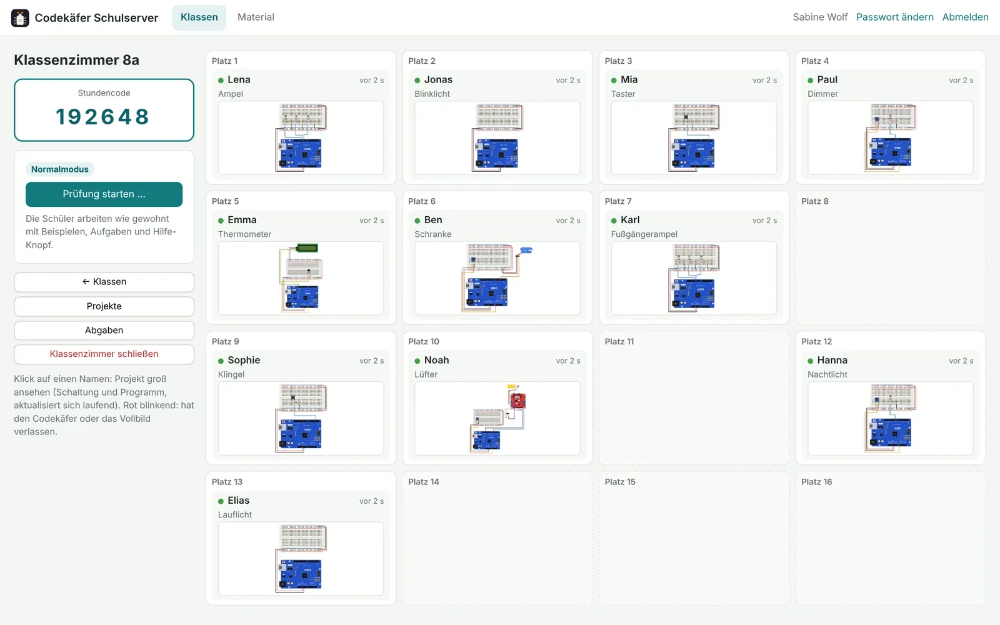

Schaltungen bauen, simulieren, programmieren.
Der Codekäfer verbindet alles in einem Programm: Schülerinnen und Schüler stecken die Schaltung am Bildschirm zusammen, programmieren mit Blöcken, probieren alles in der Simulation aus – und übertragen das Programm dann auf das echte Board.

Vom Bauteil zum fertigen Programm – in vier Schritten
Alles passiert in einem Fenster. Wer einen Fehler macht, sieht ihn sofort – in der Simulation statt erst am Board.
Schaltung bauen
Bauteile aus der Leiste auf die Werkbank ziehen und mit Kabeln verbinden – wie auf der echten Steckplatine.
Mit Blöcken programmieren
Programme aus Blöcken zusammensetzen. Auf Wunsch zeigt der Codekäfer den passenden C++-Code daneben.
Simulieren
LEDs leuchten, der Servo dreht, das Display zeigt Werte. Sensoren stellt man mit Schiebereglern ein.
Hochladen
Ein Klick überträgt das Programm per USB auf das Board – Calliope mini und micro:bit einfach per Laufwerk.
Die Simulation zeigt, was passiert
- Über 40 Bauteile: LEDs, Taster, LDR, Temperatur- und Ultraschallsensor, LCD und OLED, Servo, Motoren, Relais, NeoPixel und mehr.
- Ein Hilfe-Knopf sieht Schaltung und Programm durch: LED ohne Vorwiderstand, Taster ohne Pull-down, vergessene Pausen …
- Serieller Monitor und Messwerte zum Speichern für Excel.

Blöcke, die man versteht
- Deutsche Blöcke, geordnet nach Aktoren, Sensoren, Steuerung und Operatoren.
- Erweiterungen für Displays, Motoren, Tastenfeld, WLAN-Webseiten (ESP) und die LED-Anzeige von Calliope und micro:bit.
- Der Umstieg ist eingebaut: Die Ansicht „Blöcke + Text“ zeigt das Programm als C++ – ein guter Einstieg in die Arduino IDE.

Gemacht für den Technikraum
Der Codekäfer entsteht im Technikunterricht einer Realschule – und ist auf das ausgelegt, was dort zählt: schnell starten, wenig Technik-Ärger, klare Aufgaben.
Läuft vom USB-Stick
Nichts wird installiert. Startdatei doppelklicken – fertig. Auch vom Netzlaufwerk der Schule.
Datensparsam
Kein Konto, keine Cloud, keine Werbung. Projekte bleiben auf dem Stick oder im Schulnetz.
60 Aufgaben
Aufgaben passend zum Schülerskript, mit Tipps und dem Knopf „Aufgabe prüfen“, der die Lösung automatisch testet.
Nichts geht verloren
Automatisches Speichern und Sicherungen – eine ältere Fassung ist mit zwei Klicks zurückgeholt.
Hilfe ohne KI
Fest eingebaute Prüfungen erkennen typische Fehler und zeigen, wo es hakt – ohne Internet.
Mit Schülerskript
Ein Skript führt von der ersten LED über Sensoren bis zu eigenen Projekten.
Die ganze Klasse im Blick
Mit dem Schulserver sieht die Lehrkraft im Browser, woran jede Schülerin und jeder Schüler gerade arbeitet – live, mit Mini-Ansicht der Schaltung.
- Stundencode an die Tafel – die Klasse meldet sich mit Code, Platz-Nummer und Vorname an. Ohne Schüler-Konten.
- Aufgaben und Beispiele an die Klasse verteilen, Abgaben einsammeln.
- Prüfungsmodus: Vollbild, Hilfen gesperrt, Abgabe auf Knopfdruck.
- Großansicht einzelner Projekte für die Besprechung am Beamer.
- Läuft auf einem Rechner im Schulnetz: Windows, Linux oder Raspberry Pi.

Das Klassenzimmer im Browser der Lehrkraft.
Zum Weitergeben und Vorstellen
Für die Fachschaft, die Schulleitung oder den Elternabend.
Der Codekäfer im Überblick
Was der Codekäfer kann, was die Schule braucht – kurz und knapp.
PDF öffnenFür die Fachschaft
Zum Auslegen in der Fachschaftssitzung oder beim Tag der offenen Tür.
PDF öffnenFür die Schulleitung
Pädagogischer Nutzen, Datenschutz, Technik und Aufwand für die Schule.
PDF öffnenDen Codekäfer im eigenen Unterricht einsetzen
Sie unterrichten Technik oder Informatik und möchten den Codekäfer an Ihrer Schule nutzen? Schreiben Sie mir kurz, an welcher Schule Sie unterrichten und welche Boards Sie verwenden. Sie erhalten dann das Programm, das Schülerskript und die Anleitungen.
kontakt@codekaefer.de
Das braucht die Schule
- Rechner
- Windows 10 oder 11 mit Chrome oder Edge
- Boards
- Arduino Uno (auch Nachbauten), ESP32, ESP32-C5, ESP8266, Calliope mini oder micro:bit
- Bereitstellung
- USB-Stick, Netzlaufwerk oder Schulrechner – ohne Installation
- Schulserver
- optional; ein Rechner im Schulnetz (Windows, Linux, Raspberry Pi)
- Internet
- nur einmalig zum Einrichten der Upload-Werkzeuge und für Updates
Häufige Fragen
Muss etwas installiert werden?
Nein. Der Codekäfer startet mit einem Doppelklick und öffnet sich in einem Chrome- bzw. Edge-Fenster. Er läuft vom USB-Stick, vom Netzlaufwerk oder von einem Schulrechner.
Brauchen die Schülerinnen und Schüler ein Konto oder Internet?
Nein. Es gibt keine Anmeldung bei einem Online-Dienst. Internet wird nur einmal zum Einrichten der Upload-Werkzeuge und für Updates gebraucht. Mit dem Schulserver melden sich die Schüler nur mit Stundencode, Platz-Nummer und Vorname an.
Wo werden die Projekte gespeichert?
Auf dem Stick, im persönlichen Ordner im Schulnetz oder – mit Schulserver – auf dem Server der Schule. Keine Daten verlassen die Schule.
Was ist der Unterschied zu Online-Simulatoren?
Der Codekäfer verbindet Schaltung, Blöcke, Simulation und das Hochladen auf das echte Board in einem Programm – ohne Konto und ohne Cloud. Dazu kommen Aufgaben mit automatischer Prüfung, ein Schülerskript und auf Wunsch der Schulserver mit Klassenzimmer und Prüfungsmodus.
Welche Boards werden unterstützt?
Arduino Uno (auch Nachbauten mit CH340), ESP32, ESP32-C5, ESP8266, Calliope mini und micro:bit. Vorhandene Sets der Schule lassen sich weiter nutzen.
Früher hieß das Programm „Arduino-Werkstatt“?
Ja. Seit Version 0.22 heißt es Codekäfer. Projekte, Aufgaben und Einstellungen bleiben gültig, ein Update genügt.